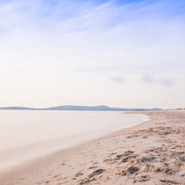

The Kuril Islands or Kurile Islands in Russia's Sakhalin Oblast region, form a volcanic archipelago that stretches approximately 1,300 km (810 mi) northeast from Hokkaido, Japan, to Kamchatka, Russia, separating the Sea of Okhotsk from the North Pacific Ocean
All the islands are currently under Russian jurisdiction. Japan claims the two southernmost large islands (Iturup and Kunashir) as part of its territory, as well as Shikotan and the Habomai islets, which has led to the ongoing Kuril Islands dispute. The disputed islands are known in Japan as the country's "Northern Territories"
Geography
The Kuril Islands form part of the ring of tectonic instability encircling the Pacific Ocean referred to as the Ring of Fire. The islands themselves are summits of stratovolcanoes that are a direct result of the subduction of the Pacific Plate under the Okhotsk Plate, which forms the Kuril Trench some 200 kilometres (120 mi) east of the islands. The chain has around 100 volcanoes, some 40 of which are active, and many hot springs and fumaroles.
Those inhabitants however, though they’ve quite a bit to be disgruntled about, are exceptionally good-natured. Perhaps it comes from having to get along and help one another in this harsh environment.Danila Antsiferov
List of main islands
While in Russian sources the islands are mentioned for the first time in 1646, the earliest detailed information about them was provided by the explorer Vladimir Atlasov in 1697.
| Island | Landing point | Other Cities | Area (km2) | Population |
|---|---|---|---|---|
| Shumshu | Baikovo | 388.0 | 20 | |
| Makanrushi | Zakat | 50.0 | 0 | |
| Onekotan | Mussel | Kuroisi, Nemo | 425.0 | 0 |
| Matua | Sarychevo | 52.0 | 0 | |
| Ushishir | Kraternya | Ryponkicha | 5.0 | 0 |
In the 18th and early 19th centuries, the Kuril Islands were explored by Danila Antsiferov, I. Kozyrevsky, Ivan Yevreinov, Fyodor Luzhin, Martin Shpanberg, Adam Johann von Krusenstern, Vasily Golovnin, and Henry James Snow.